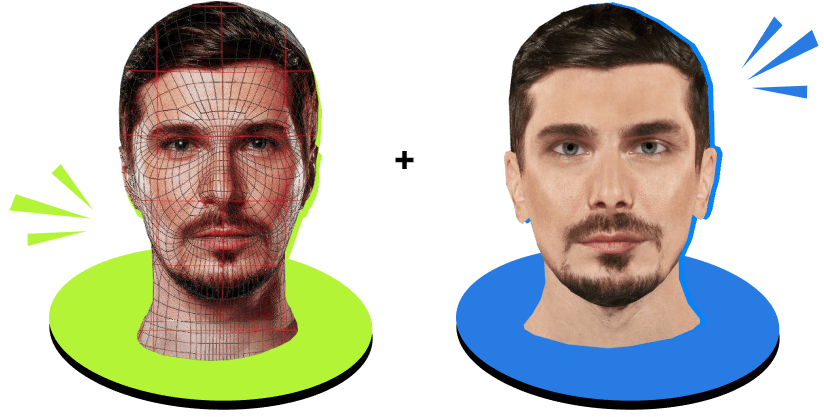
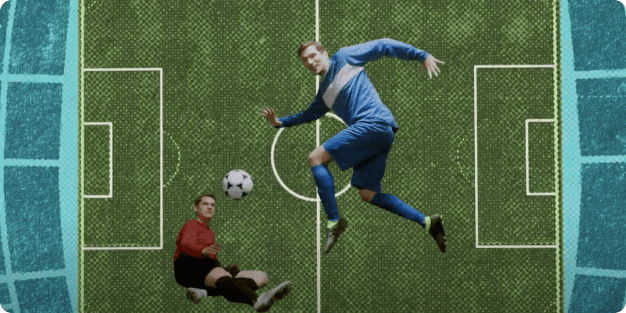

Flint
Як ми створили віртуального
Позитива для футбольної
реклами сухариків Flint
Завдання:
бренд звернувся до нас за розробкою та реалізацією рекламної кампанії для сухариків Flint Grenki. Потрібно було відобразити 2 основні ситуації вживання сухариків: під час перегляду футболу та під час гри у FIFA.
После выхода рекламной кампании “FLINT ФУТБОЛ” удалось не только выполнить годовые цели по продажам в данной линейке, но и превзойти их более чем на 10%
Директор по маркетингу Snack Production
Разуваев Евгений
Головний челендж полягав не лише в створенні ефективної реклами, а й у тому, щоб ця реклама залишилася в рамках загальної комунікаційної стратегії бренду. Словом, треба було залишатися веселими, вільними, яскравими і водночас створити на 100 % футбольну історію.
У якості посла бренд обрав Позитива, тому вся рекламна кампанія за будь-яких обставин повинна була вишикуватися навколо нього.
Ми вирішили розділити нашу глобальну футбольну історію на дві частини: одну присвятити реальному футболу, а другу — віртуальному, бо це дві основні ситуації споживання грінок.
У «реальній футбольній історії» Позитив виконував усі ролі й це виглядало як дуже цікавий сюжетний хід. Ми створили ламповий 30-секундний міні-кліп, трек для якого написав сам Льоша.
Слоган кампанії
«Є Flint — є футбол»
Це картинка, яку хочеться перемотати/переглянути/переслухати. Динаміка, занурення, хрускіт пачки, драйв — усе, що потрібно для ідеального футбольного вечора перед телевізором.
Але з другим роликом знімальна історія вийшла ще ефектнішою, оскільки ми вирішили втілити в життя віртуального Позитива. Авжеж, з постпродакшеном довелося трохи заморочитися, але результат того вартий!
Тут динамічна та атмосферна історія теж відбувається під трек Льоші, але в цій історії він стає справжнім героєм легендарної гри FIFA.
До речі, рекламна кампанія доповнилася ще й інтерактивним лендингом, для якого спеціально створили шаржі на відомих футболістів. Можна вибрати футболіста й дізнатися, який із 4 смаків грінок підходить тобі найбільше.
переглянутиЦе був справді цікавий та незвичайний проєкт, яким дуже хотілося поділитися. Вкотре довелося переконатися, що сміливі експерименти — це гарна ідея.
